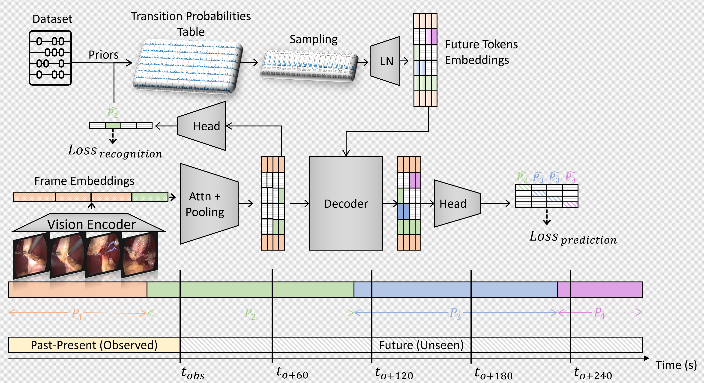
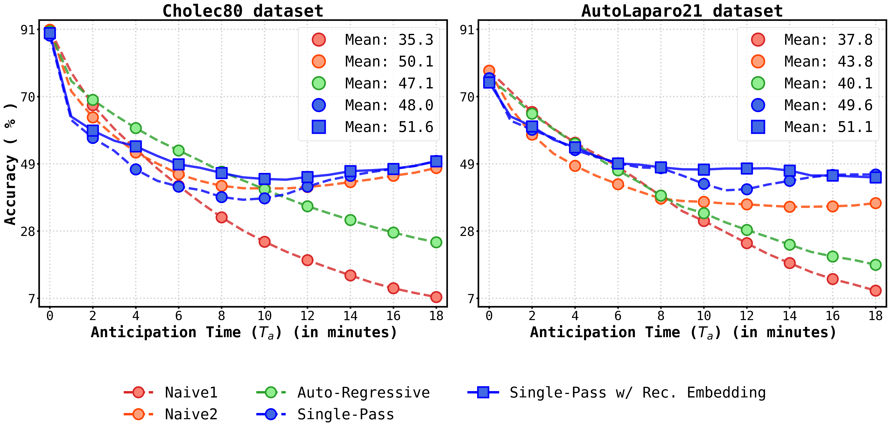

Video 15: Single-Pass R2C
Video 16: Auto-Regressive
Video 16: Single-Pass
Video 16: Single-Pass with Embedding
Video 17: Auto-Regressive
Video 41: Auto-Regressive
Video 41: Single-Pass
Video 41: Single-Pass with Embedding
Video 44: Single-Pass with Embedding R2C
Video 47: Single-Pass with Embedding R2C
Video 47: Single-Pass with Embedding R2C
Video 41: Auto-Regressive
Video 42: Auto-Regressive
Intra-operative recognition of surgical phases holds significant potential for enhancing real-time contextual awareness in the operating room. However, we argue that online recognition, while beneficial, primarily lends itself to postoperative video analysis due to its limited direct impact on the actual surgical decisions and actions during ongoing procedures. In contrast, we contend that the prediction and anticipation of surgical phases are inherently more valuable for intra-operative assistance, as they can meaningfully influence a surgeon’s immediate and long-term planning by providing foresight into future steps.
To address this gap, we propose a dual approach that simultaneously recognises the current surgical phase and predicts upcoming ones, thus offering comprehensive intra-operative assistance and guidance on the expected remaining workflow. Our novel method, Surgical Phase Recognition and Anticipation (SuPRA), leverages past and current information for accurate intra-operative phase recognition while using future segments for phase prediction. This unified approach challenges conventional frameworks that treat these objectives separately. We have validated SuPRA on two reputed datasets, Cholec80 and AutoLaparo21, where it demonstrated state-of-the-art performance with recognition accuracies of 91.8% and 79.3%, respectively.
Additionally, we introduce and evaluate our model using new segment-level evaluation metrics, namely Edit and F1 Overlap scores, for a more temporal assessment of segment classification. In conclusion, SuPRA presents a new multi-task approach that paves the way for improved intra-operative assistance through surgical phase recognition and prediction of future events.
Comment on the model architecture
Comment results
...
1. Clinical validation in the operating room. 2. Generalisation to more than two datasets.
LoViT / SKiT / SuPRA
... link
@article{boels2024supra,
title = {SuPRA: Surgical Phase Recognition and Anticipation for Intra-Operative Planning},
author = {Maxence Boels and Yang Liu and Prokar Dasgupta and Alejandro Granados and Sebastien Ourselin},
year = {2024},
journal = {arXiv preprint arXiv: 2403.06200}
}